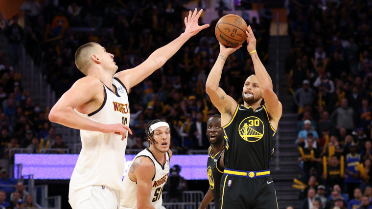

The NBA's Databall MVPs, Ranked
NBA accolades fuel much of the proverbial fire in discourse among league fans. Whether utilized in free agency/trade grades, current player comparisons, or all-time rankings, such accolades, voted on by members of the…